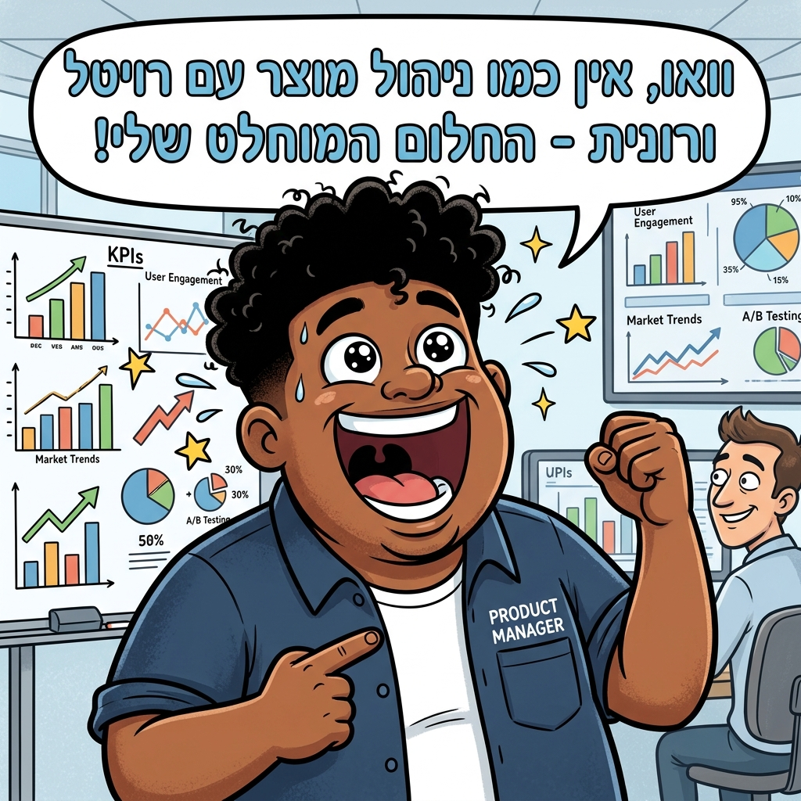
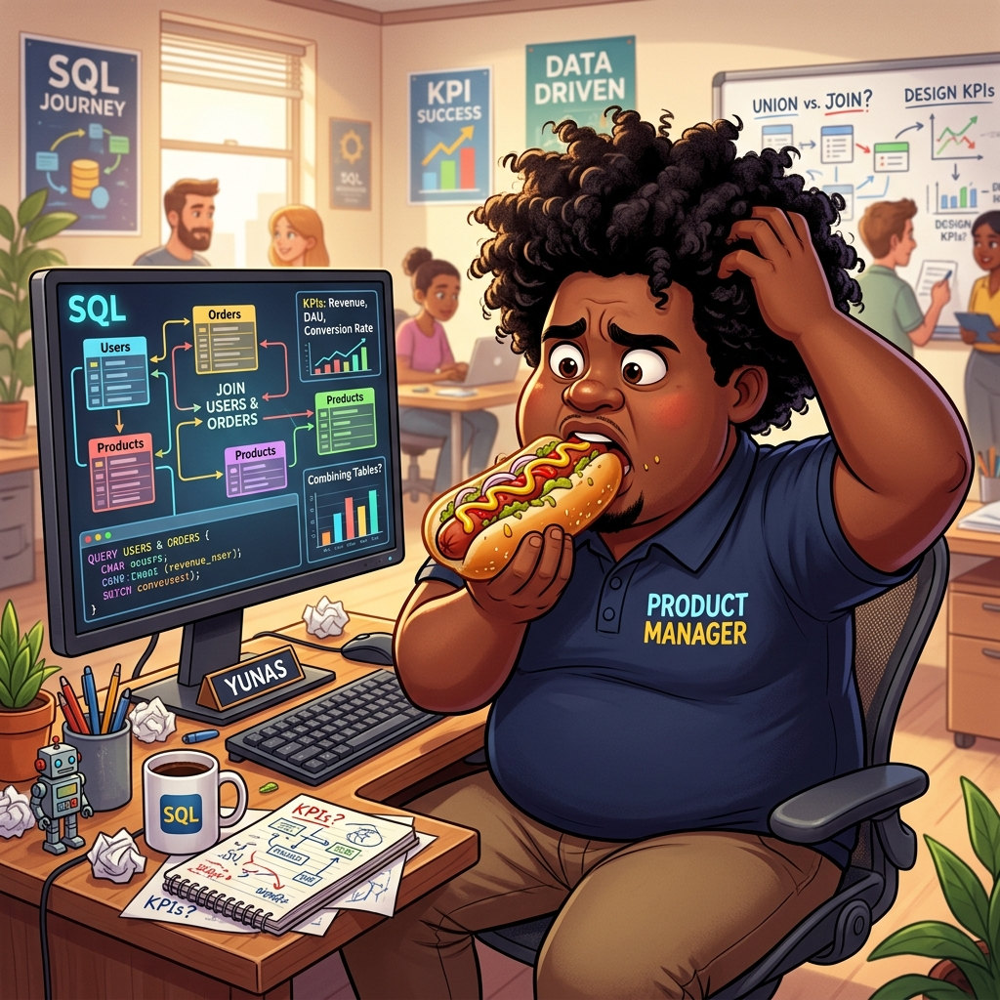

ברוך הבא למסע המדדים העסקיים שלך! 🚀
כאן נלמד איך לקחת מוצר, לזקק עבורו את מדדי ההצלחה (KPIs) ולהציג אותם בצורה מקצועית ב-Tableau.

יונס ("החולם") מעדכן מהשטח:
"וואו, אין כמו ניהול מוצר עם רויטל ורונית! החלום שלייייייייי! 😍 לעשות דשבורדים מנצנצים ב-Tableau עם calculated fields זה פשוט רמה אחרת!"
🎯 מטרות הלומדה ומסמך הדרישות המהותי
כדי שלא נבנה תרשימים בצורה עיוורת, נגדיר תחילה את מפת הזרימה של הנתונים ואת הכלים שבהם נשתמש בתוך Tableau:
🛠️ ארגז הכלים המקצועי שלך ב-Tableau:
- Pages Shelf: ליצירת הנפשה לאורך זמן (לדוגמה, צפייה במגמת ה-Retention מחודש לחודש בצורה מונפשת).
- Filters Shelf: סינון מהיר של פלטפורמה (מובייל / ווב) או קטגוריית מנוי כדי לתת מענה לשאלות עסקיות ממוקדות.
- Marks Card: שינוי צבעים (Color), גדלים (Size) ותוויות (Label) כדי להבליט את החלקים החשובים ולהקל על קריאת התרשים.
- Calculated Fields: יצירת מדדים מתמטיים מורכבים (כמו שיעור המרה ו-ARPU) שלא קיימים בטבלאות הגולמיות.
ניתוח מדדים עסקיים הוא הלב של ניהול המוצר. ללא הבנת המדדים, מנהלי מוצר מגששים באפלה. במשימה זו נלמד כיצד לבנות שני דשבורדים עיקריים:
- דשבורד למנהלי מוצר (PM Dashboard): לצורך מעקב אחרי KPIs גלובליים, התנהגות ואסטרטגיה עסקית.
- דשבורד למשתמשי המוצר (End-User Dashboard): הצגת נתונים מותאמים אישית לפעילות המשתמש במערכת כדי לשפר את המעורבות שלו.
איך מגדירים KPI, ואיך ״מרמים״ (חוקית) בעזרת SQL ו-AI? 🤖
הפקת נתונים היא אסטרטגיה מדויקת. נלמד כעת את מודל 5 השלבים המנצח של מנהלי המוצר המובילים!

יונס בדילמה עמוקה:
יונס אוכל נקניקייה ענקית ותוהה: "רגע... איך לעזאזל אני מחבר את טבלת הלקוחות עם טבלת העסקאות ב-SQL ומסביר ל-AI בדיוק מה לעשות בלי שהוא יתחיל להזות לי נתונים ריקים?!"
🪜 המדריך לבניית מדד הצלחה (KPI) שלב אחר שלב:
- הגדרה עסקית: מהי מטרת המוצר? (למשל: ב-FitQuest - להגדיל מעורבות באימונים).
- בחירת המדד (Metric): מה מודד את ההצלחה הזו? (למשל: שיעור המרה מרכישות סך הכל).
- שיטת החישוב (SQL / Calculated Field): הגדרת הנוסחה המדויקת שממירה נתונים גולמיים למדד אסטרטגי.
👨💻 תהליך העבודה ההדרגתי של יונס ("SQL Guru"):
שימו לב כיצד אנו מעבירים את ה-AI סדרת שלבים מובנית והדרגתית כדי לייצר מאגר מושלם מבלי לדלג על שום קשר לוגי:
שלב א׳: זריקת סכמת ה-SQL המלאה אל תוך ה-AI 📁
לא מתחילים מהסברים באוויר. אנו מזינים ל-AI את הגדרת ה-SQL המקורית (CREATE TABLE) של מאגר הנתונים שלנו כדי שהוא יבין את שמות העמודות, סוגי הנתונים (INT, VARCHAR, DATE) והמפתחות הראשיים.
שלב ב׳: הגדרת קהל היעד והמשתמשים של הנתונים 👥
מסבירים ל-AI מי קורא את הנתונים ומה מטרת העל שלו. לדוגמה: "אנו רוצים לאפשר למנהל המוצר של FitQuest לנתח את שיעורי ההמרה של הרכישות והשימוש באפליקציה".
שלב ג׳: בחירה והגדרה של הטבלאות לצורך הדשבורד 📊
מבקשים מה-AI לזהות ולבחור את הטבלאות שיש להן ערך עסקי לצירוף (JOIN). במקרה שלנו: שילוב של טבלת הלקוחות (Users) יחד עם טבלת העסקאות (Payments) כדי לקבל תמונה מלאה של ההכנסות לפי מאפייני המשתמשים.
שלב ד׳: הגדרת Guardrails נוקשים למניעת הזיות 🛡️
קובעים מגבלות הגנה נוקשות שימנעו שורות ריקות, תאריכים עתידיים או ערכים שליליים לא חוקיים (למעט השורות החריגות שאנו יוצרים בכוונה עבור משחק ה-QC).
שלב ה׳: בקשת פלט CSV מסודר לאינטגרציה ב-Tableau 💾
מנחים את ה-AI להחזיר פלט CSV טבלאי מדויק ונקי. את הטבלה הגדולה והמאוחדת הזו אנו טוענים ל-Tableau, וממנה מייצרים את כל הגרפים הרלוונטיים המנצנצים שלנו!
📋 פרומפט SQL & Guardrails משולב להעתקה:
לפניך סכמת ה-SQL של מערכת FitQuest:
CREATE TABLE Users (User_ID INT, Customer_Name VARCHAR(50), Platform VARCHAR(10));
CREATE TABLE Payments (Transaction_ID INT, User_ID INT, Amount_Paid_ILS INT, Transaction_Date DATE, Device_Browser VARCHAR(20));
בצע INNER JOIN לוגי בין שתי הטבלאות לפי מפתח משותף User_ID, וג׳נרט לי טבלה אחת מאוחדת ומורחבת (Crosstab) של 20 שורות במבנה CSV המייצגת את נתוני הדשבורד.
החל את ה-Guardrails הבאים:
1. עמודת Amount_Paid_ILS חייבת להכיל ערכים חיוביים בלבד בין 49 ל-499.
2. עמודת Transaction_Date חייבת להיות בתאריכים הגיוניים בשנת 2026 בלבד.
3. שלב בדיוק 4 שורות עם חריגות ספציפיות לצורך תרגול בקרת איכות (QC) של הסטודנטים.
משחק בקרת איכות: מצא את ה"הזיות" 🕵️♂️
בינה מלאכותית היא כלי מדהים, אך לפעמים היא מייצרת נתונים לא הגיוניים ("הזיות"). תפקידנו לבצע בקרת איכות קפדנית לפני טעינת הנתונים ל-Tableau!
| מזהה עסקה | שם לקוח | תאריך | פלטפורמה | סכום | מכשיר |
|---|---|---|---|---|---|
| TX-2001 | אלון ישראלי | 2026-04-12 | מובייל | ₪89 | iOS Safari |
| TX-2002 | נועה כהן | 2026-04-15 | ווב | ₪-250 | Chrome Desktop |
| TX-2003 | גיא מנור | 2026-05-01 | ווב | ₪349 | Firefox |
| TX-2004 | טלי רייך | 2028-12-15 | מובייל | ₪49 | Android WebView |
| TX-2005 | רון שחר | 2026-05-10 | מובייל | ₪89 | iOS Safari |
| TX-2006 | מיכל חסון | 2026-05-12 | מובייל | ₪349 | Chrome Desktop |
| TX-2007 | עידן צור | 2026-05-20 | ווב | ₪499 | Safari Desktop |
| TX-2008 | [ריק / NULL] | 2026-05-22 | ווב | ₪180 | Edge Desktop |
הגדרת תרשימים ברמה המהותית והעסקית 📊
אל תזרקו סתם תרשימים ללוח. כל תרשים בדשבורד שלכם חייב לענות על שאלה עסקית קונקרטית מתוך חזון המוצר.
תרשים סתמי
תרשים עוגה שמראה "סך הכל עסקאות לפי צבע כפתור".
תוצאה: הנהלה לא מבינה מה הערך ואיך זה משפיע על קבלת ההחלטות שלה.
תרשים ממוקד מטרה
תרשים פילוח לפי "שיעור המרה ושימור משתמשים לפי פלטפורמה".
תוצאה: מאפשר למנהל המוצר להבין מיידית איפה לשפר את הממשק (UI) כדי להגדיל הכנסות.
מדריך בחירת תרשימים אינטראקטיבי 🧭
בחר את השאלה העסקית שברצונך לחקור ולחץ עליה כדי לראות את התרשים המתאים, צורת הפירוש שלו, ומתי הוא משמש את החברות המובילות בעולם:
בוא נבחן את היכולת שלך לבנות שדות מחושבים (Calculated Fields) ב-Tableau. גרור או לחץ על החלקים בסדר הנכון כדי להרכיב את הנוסחה לחישוב אחוז המרה (Conversion Rate):
סימולטור דשבורדים עסקיים ב-Tableau 🌟
הנה דוגמה חיה לדשבורדים התואמים בדיוק את מה שניתן לייצר בקלות ב-Tableau באמצעות צירים, עמודות, שורות וסקטר-פלוט.
💸 המטרה: להציג נתונים ולהפוך למנהל מוצר עשיר!
שימוש נכון ב-Marks Card, ב-Filters, ובשדות מחושבים יאפשר לכם להראות להנהלה בדיוק איפה הכסף הגדול נמצא. שימו לב להבדלים המהותיים בין סוגי הדשבורדים הבאים שניתן לבנות בקלות:
📈 דשבורד אסטרטגי (Strategic)
מיועד להנהלה הבכירה ומציג מדדי על רבעוניים ושנתיים (כמו סך הכנסות מצטבר Revenue או כמות משתמשים ייחודיים MAU). מבוסס בעיקר על תרשימי קו רציפים להבנת המגמה.
📊 דשבורד טקטי (Tactical)
מיועד למנהלי מחלקות ומנהלי מוצר לצורך השוואה ופילוחים (למשל: השוואת הכנסות בין מובייל לווב בעמודות, או פילוח חלק מתוך השלם בעזרת Pie). נעשה שימוש כבד ב-Filters.
⚡ דשבורד תפעולי (Operational)
מעקב בזמן אמת אחרי עסקאות, לוגי שרת ופעולות יומיות של לקוחות קצה. כולל טבלאות נתונים מסודרות ופשוטות של עסקאות אחרונות (בדיוק כמו הסימולטור למטה!).
יומן פעילות ועסקאות מונפש
| מזהה | שם לקוח | אימייל | פילוח | שירות שנרכש | סכום עסקה | תאריך |
|---|